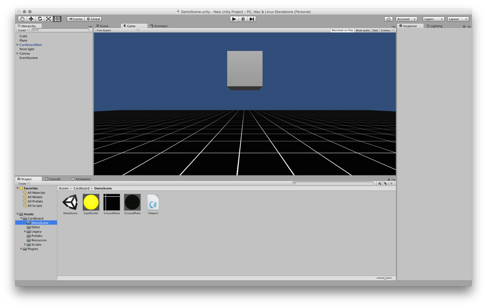

Ziel des Projektes war es die Möglichkeiten von Google Cardboard mit Hilfe eines Mini Gemes zu explorieren.
Die Interaktionsmöglichkeiten bei Google Cardboard sind auf folgende drei Punkte beschränkt:
Deswegen waren wir was die Spielidee angeht auch recht eingeschränkt. Der Benutzer sollte sich innerhalb einer 3D Landschaft befinden. Es sollte sich bewegende Objekt geben die der Benutzer “abschießen” kann, indem er sie anvisiert und dann den MagnetButton an der Google Cardboard Brille drückt.
Das Google Cardboard Unity Demo Projekt war eine sehr gute Grundlage auf die wir unser Mini Game aufbauen konnten.
Wir haben folgende Komponenten aus dem Demo Projekt übernommen:
Wir haben folgende Komponenten selber hinzugefügt um aus dem Demo Projekt ein Mini Game zu machen:
Um die Verfolgung des Players durch die Gegner zu realisieren haben wir das UnitySteer Toolkit verwendet. Den Rest der Komponenten haben wir selber erstellt.
Leider hatten wir nicht mehr genug Zeit um in CINEMA 4D bessere 3D Modelle zu bauen.
Das Mini Game lässt sich auf iOS und Android Geräten genau so installieren wie das Google Beispielprojekt. Die genaue Anleitung ist unter https://developers.google.com/cardboard/overview verfügbar.